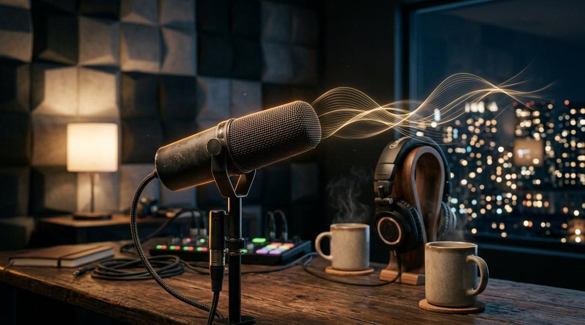
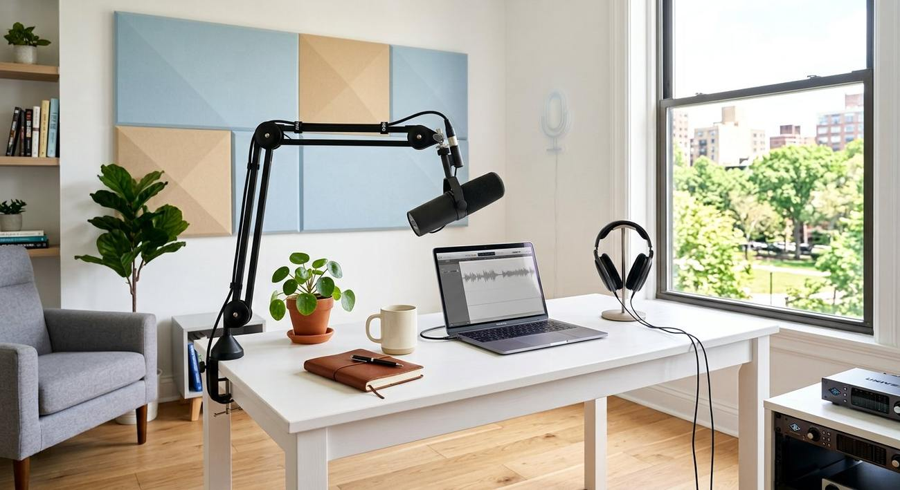
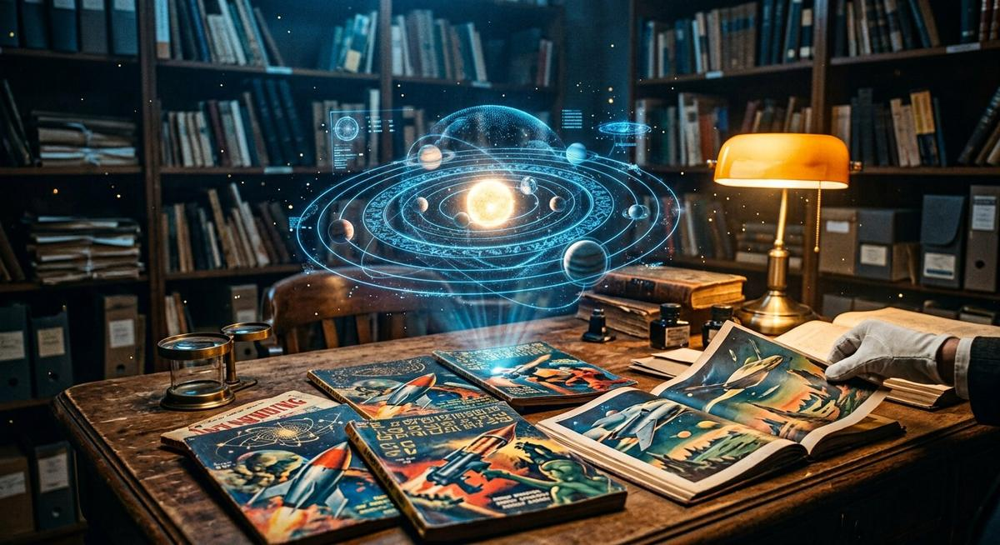

Podcasts, livres, bandes dessinées, musique : chaque média présenté ici est fabriqué par nos propres pipelines d'agents — puis relu, vérifié et assumé par des humains. C'est notre preuve par l'exemple : ce que nous expliquons, nous le faisons, chaque semaine, depuis des années.
Musique, podcasts, livres, BD : quatre laboratoires, une même exigence — tout est produit par nos pipelines, puis vérifié à l'oreille et à l'œil par des humains.

Des ondes aux oreilles : nos scripts naissent en texte, passent en voix, et rejoignent 160 épisodes. Voici le studio.
Quatre laboratoires de création.

🎧 Nexus Horizon AI — 160 épisodes, 4 émissions
Futur Immédiat (tech, IA, science), Dossiers Noirs (true crime), Mental OS (productivité & cerveau), Vie Pratique (société & argent). Scripts, recherche et montage assistés par nos pipelines.
Guides techniques — dont « La bible des agents IA » —, romans et adaptations d'œuvres du domaine public en BD illustrées. Publiés sur Amazon KDP avec notre machine éditoriale.
Modules e-learning, quiz, vidéos et résumés audio produits pour les enseignants et organismes de formation — la vitrine de notre offre « Machine à cours ».
Melodyz et ses huit idoles coréennes 100 % virtuelles — et Michael Shepherd, dont l'album « Essentiel » est produit de bout en bout par nos outils. Deux chaînes, deux univers.
Pourquoi ces médias sont importants : ils démontrent en conditions réelles la fiabilité de nos pipelines (régularité, coût maîtrisé, qualité contrôlée). Quand vous nous confiez un média, vous ne prenez pas un pari — vous rejoignez une chaîne de production qui tourne.
Nos sites
Les sites que nous avons réalisés.
Nos pipelines produisent aussi des sites complets : encyclopédies hyperréalistes du pulp en domaine public et sites officiels des thrillers de Franck Platon — parfois plusieurs regards pour un même univers. Chaque site est une vitrine : univers, personnages, galeries, sources.

Captain Future — l'encyclopédie pulp
Les Futuremen, les 27 romans d'Edmond Hamilton (1940-1951), l'Atlas Solaire, le bestiaire et la galerie : le système solaire de 2940 documenté à partir des seuls pulps originaux.
Le second regard du club sur le Wizard of Science : le créateur, la série, les romans phares et la technologie des pulps — la référence culturelle illustrée.
Philip Francis Nowlan (1928-1940) remis en lumière : un récit hyperréaliste séquentiel en trois actes, l'atlas 3D de l'an 2419 et une galerie — avec un mode vintage pulp.
La tablette de Nabonide, les 20 missions des Gardiens, la carte, le trailer et le compendium : le thriller ésotérique de Franck Platon en expérience interactive.
L'armée de terre cuite, la génétique de pointe et l'Antarctique : synopsis, personnages, univers et premier chapitre du techno-thriller archéo-SF de Franck Platon.